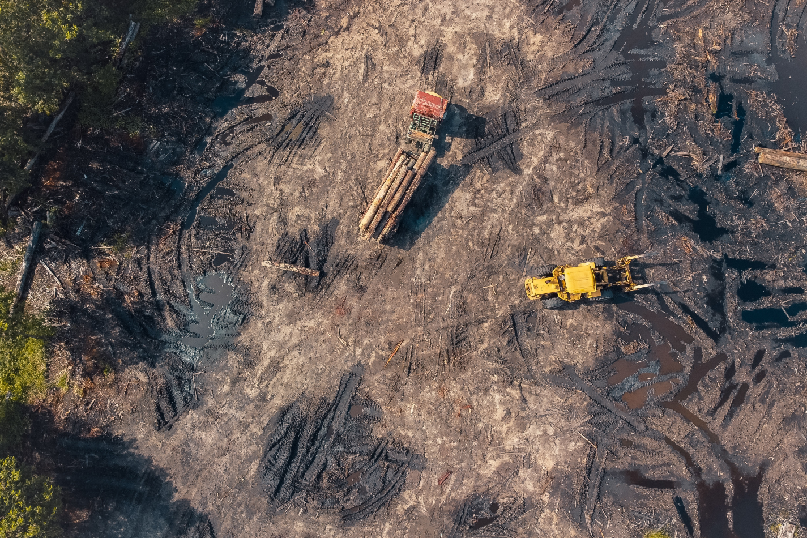

Desenvolvido para curso Técnico de Informática. Somente para fins educativos.


Dados da Coleção 6 do MapBiomas (@mapbiomasbrasil) sintetizam 35 anos dos mapas anuais de cobertura e uso da terra do Brasil. Um dos levantamentos revela que entre os anos de 1985 e 2020 o bioma amazônico teve uma perda líquida de vegetação cerca de nove vezes a área do estado Rio de Janeiro: ao todo, 44,5 milhões de hectares. A perda líquida indica o balanço entre perda/desmatamento e ganho/regeneração no período. Do total de área perdida, 99% foi convertida para uso agropecuário: 86,3% (38 milhões de hectares) se transformou em pasto e 13,6% (6 milhões de hectares) foi usado para agricultura.  Estados já conhecidos pelos altos índices de desmatamento lideram as maiores reduções de áreas florestais: o Pará encabeça a lista quando considerado o acumulado no período, com perda de 15,4 milhões de hectares entre 1985 e 2020. Na sequência está Mato Grosso, com acumulado de 13,7 milhões de ha desmatados. Rondônia figura em 3º lugar com perda de 6,7 milhões de hectares. No site mapbiomas.org você confere dados completos da Coleção 6, que traz ainda informações sobre a mineração, impacto do fogo e redução de superfície de água no país.
Texto feito por: @midianinja e compartilhado pela Natural Tree.
Desenvolvido para curso Técnico de Informática. Somente para fins educativos.